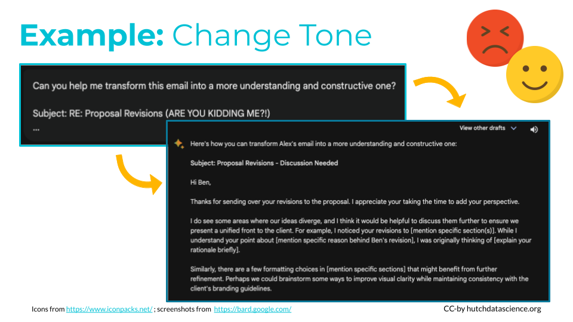

What AI Makes Possible
Artificial Intelligence is opening up many possible pathways in many different fields.
It has allowed:
Advancements in text mining
More accurate text modification and generation
Automation of tedious tasks
Idea generation
Planning and organizing
Synthetic data generation
Text-to-speech and back
Interactive help and debugging
Let’s explore several broad ways in which AI can be used today.
Advancements in Text Mining
Text mining is the process of extracting meaningful insights, patterns, and knowledge from unstructured textual data. This data could include articles, documents, emails, social media posts, business records, policy records, and more. This data is digested by a computer into a structured format for analysis, allowing for the discovery of hidden patterns, relationships, and / or summary information.
Historically, mining for relevant text had to follow rule-based or statistical methods that required a lot of human oversight. Generative AI has led to many advancements in text mining. Some of these include:
Contextual Understanding: Generative AI, especially transformer models, has improved contextual understanding in text mining. AI can consider relationships between words in a sentence more effectively using the self-attention mechanisms available as part of transformers. This results in more accurate extraction of context-dependent information.
Text Completion and Generation: Generative AI allows for the completion of partial or missing text. In text mining, this capability is useful for handling incomplete or noisy data, improving the overall quality of mined information.
Domain-Specific Language Generation: Generative AI can be fine-tuned for domain-specific language generation. This is particularly beneficial in industries where specialized terminology or jargon is prevalent. By training generative models on domain-specific data, text mining models can better adapt to the nuances of the industry or discipline in general.

Examples
Text mining can be used for:
Mining clinical patient notes to identify patients with similar symptoms
Mining extensive technical or financial documents to identify relevant sections more easily
Extracting Population Statistics
A simplified example of text mining can be seen here with ChatGPT. We will provide some information from the Wikipedia article for the city of Seattle and ask the large language model to extract only relevant statistics related to population growth.
Can you extract relevant statistics from this Wikipedia passage related to population growth?
Seattle is a seaport city on the West Coast of the United States. It is the seat of King County, Washington. With a 2022 population of 749,256[10] it is the most populous city in both the state of Washington and the Pacific Northwest region of North America, and the 18th most populous city in the United States. The Seattle metropolitan area’s population is 4.02 million, making it the 15th-largest in the United States.[11] Its growth rate of 21.1% between 2010 and 2020 made it one of the country’s fastest-growing large cities.[12]
Seattle is situated on an isthmus between Puget Sound (an inlet of the Pacific Ocean) and Lake Washington. It is the northernmost major city in the United States, located about 100 miles (160 km) south of the Canadian border. A major gateway for trade with East Asia, the Port of Seattle is the fourth-largest port in North America in terms of container handling as of 2021.[13]
The Seattle area has been inhabited by Native Americans (such as the Duwamish, who had at least 17 villages around Elliot Bay) for at least 4,000 years before the first permanent European settlers.[14] Arthur A. Denny and his group of travelers, subsequently known as the Denny Party, arrived from Illinois via Portland, Oregon, on the schooner Exact at Alki Point on November 13, 1851.[15] The settlement was moved to the eastern shore of Elliott Bay in 1852 and named “Seattle” in honor of Chief Seattle, a prominent 19th-century leader of the local Duwamish and Suquamish tribes. Seattle currently has high populations of Native Americans alongside Americans with strong Asian, African, European, and Scandinavian ancestry, and hosts the fifth-largest LGBT community in the U.S.[16]
Here is the response:
Certainly! Here are the relevant statistics extracted from the provided passage related to population growth:
Population Growth Rate (2010-2020): The growth rate of Seattle between 2010 and 2020 was 21.1%, making it one of the country’s fastest-growing large cities.[12]
Current Population (2022): The population of Seattle in 2022 is reported to be 749,256.[10]
Metropolitan Area Population: The population of the Seattle metropolitan area is 4.02 million, making it the 15th-largest in the United States.[11]
These statistics highlight the significant population growth of Seattle over the specified time period, positioning it as one of the fastest-growing large cities in the United States.
In reality, you might be providing a much larger volume of data or be looking for more nuanced information.
Modifying and Generating Text
Generative AI in the form of Large language Models like ChatGPT and Claude can be especially useful for modifying and generating text. This could mean changing the tone of a piece of writing, creating summaries based on text data input, or making writing more understandable to different audiences.
Examples
Here are some examples of using AI to modify or generate text:
Altering an email to be more empathetic
Translating text into another language, otherwise known as machine translation
Summarizing multiple files within a project to make a project summary - For example, a README file across many code scripts for software development
Summarizing legal documents in a way that is readable to broader audiences with less familiarity with legal jargon
Transforming an Angry Email
Let’s see this in practice. Take for example this email to a colleague that is really frustrating you right now. You might ask Bard to help you make it more constructive and empathetic.
Can you help me transform this email into a more understanding and constructive one?
Subject: RE: Proposal Revisions (ARE YOU KIDDING ME?!)
Hi Ben,
I just read your revisions to the proposal and frankly, it’s an insult to my intelligence and hard work. Did you even bother to skim the original document? Half your changes are nonsensical and the other half seem like you were just trying to sound fancy.
This project is riding on my expertise. If you want your name anywhere near this proposal, you’d better come up with something actually useful, not just reword my sentences. And don’t even get me started on the formatting…
I expect a complete rewrite by tomorrow morning, and this time, make sure it’s actually worthy of presenting to the client. Don’t waste my time or theirs.
Sincerely (not really),
Alex
Here is the response:
Subject: Proposal Revisions - Discussion Needed
Hi Ben,
Thanks for sending over your revisions to the proposal. I appreciate your taking the time to add your perspective.
I do see some areas where our ideas diverge, and I think it would be helpful to discuss them further to ensure we present a unified front to the client. For example, I noticed your revisions to [mention specific section(s)]. While I understand your point about [mention specific reason behind Ben’s revision], I was originally thinking of [explain your rationale briefly].
Similarly, there are a few formatting choices in [mention specific sections] that might benefit from further refinement. Perhaps we could brainstorm some ways to improve visual clarity while maintaining consistency with the client’s branding guidelines.
Would you be free for a quick chat sometime this afternoon to discuss these points and find a solution that incorporates both our strengths? I believe that collaborating on this will lead to a stronger proposal overall.
Best,
Alex
We all have our moments of frustration, but AI can help us be better colleagues. By asking Bard to transform this email, we can prevent an uncomfortable and hurtful work situation.

Automating Tedious Processes
Generative AI can help tackle repetitive processes. You can think of it like an automation assistant. It can be especially useful for automating work that requires conversion of content from one form to another, for example text-to-speech, image-to-text, and so on.

Examples
Here are some examples of using AI to automate tasks:
Writing a draft of code annotations to help you annotate code
Generating meeting notes automatically
Getting suggestions for ways to deidentify clinical data
Generating audio from text for a video voiceover
Converting physician dictations from a patient visit to text format
Meeting Note Takers
No one likes to attend a meeting, only to forget what was being discussed. Fortunately, many AI note takers have entered our world recently. The online meeting platform Zoom has an “AI assistant” that can summarize meetings (Zoom 2023). Companies like fireflies.ai and Otter.ai also offer similar functionality, recording meeting notes, offering summaries, capturing action items, and more.
Idea Generation
Generative AI can provide templates or scaffolds. In other words, AI can get the creative juices flowing and make it easier to start new content. AI can also help synthesize data to suggest possible new relationships.
Diabetes Gene Hypotheses
The Diabetes Data and Hypothesis Hub (D2H2, https://d2h2.maayanlab.cloud/) was created to make it easier for biomedical researchers to access and use data related to diabetes (Marino et al. 2023). The Hub incorporated a GPT-style chatbot that allows users to ask questions in plain terms about their data analysis needs.
D2H2 also has the ability to generate hypotheses. It randomly selects gene sets related to existing gene activation signatures and compares them with gene sets found in published articles. The AI provides ideas about possible explanations for the similarities between these gene sets.

Planning and Organizing
You can use generative AI to suggest and break down ways to accomplish a task based on prior task planning. In other words, it can generate a template for events or projects. For example, it can:
Plan the agenda for a conference or meeting
Plan and assign roles for a new project task list.
Meeting Agendas
Let’s imagine we are in a leadership role at a research institution. Soon, the institution will be unveiling a new genomic research coordinating center, but we need to make sure the whole executive suite is on board. Let’s see how a large language model might give us a starting point for the meeting agenda:
Can you provide a sample agenda for an executive meeting, where the goal is to reveal a new genomic research coordinating center at our institution?
Here is the response:
Executive Meeting Agenda - Unveiling the New Genomic Research Coordinating Center
Meeting Date: [Date]
Meeting Time: [Time]
Meeting Location: [Location]
Attendees: [List executive team members and other key stakeholders]
Introduction & Welcome (5 minutes)
- Welcome by [Host/Chair]
- Brief overview of meeting goals and agenda
Genomic Research Landscape & Challenges (10 minutes)
- Presentation by [Speaker]: State of the art in genomic research
- Current challenges in coordination and collaboration
- Economic and societal impact of advancements in genomics
Introducing the New Genomic Research Coordinating Center (20 minutes)
- Presentation by [Center Director]: Center’s mission, vision, and core values
- Key services and capabilities offered by the center
- How the center addresses existing challenges and fosters collaboration
- Examples of ongoing or planned research initiatives
Center Operations & Budget (15 minutes)
- Presentation by [Center Administrator]: Funding sources and budget allocation
- Staffing plan and key personnel introductions
- Technology infrastructure and resources
- Partnerships and collaborations with external institutions
Open Discussion & Q&A (20 minutes)
- Encourage executives to ask questions and seek clarification
- Address any concerns or potential roadblocks
- Gather feedback and suggestions for the center’s future
Next Steps & Action Items (10 minutes)
- Summarize key takeaways and action items
- Assign clear responsibilities and timelines for next steps
- Outline communication plan for broader institutional announcement
Closing Remarks (5 minutes)
- Express gratitude for executive support and engagement
- Reiterate the center’s potential impact and contributions
- Positive outlook on the future of genomic research at the institution
Optional Items
- Depending on time constraints, you may consider adding a brief tour of the center facilities or including short demos of key technologies.
- Prepare handouts with key information about the center, including contact details and resources.
- Consider a light breakfast or refreshments to encourage engagement and networking.Remember to adjust the agenda based on your specific needs and priorities. The key is to ensure a clear, concise, and informative presentation of the new center, while also addressing any potential concerns and fostering enthusiasm among the executive team.
I hope this sample agenda helps you prepare for a successful meeting!
The above gives us a good place to start, so we aren’t staring at a blank page. Of course, it’s important to tailor responses to meet your needs. However, this could get us started, ensuring that we use time in the meeting effectively.
As long as the information is not sensitive or proprietary, you could also give the large language model more context. This will help it tailor the response better.
Synthetic Data Generation
For more technical needs, AI can help generate synthetic data to experiment with. For example, it can help with sparse data, propose/test models for data that does not yet exist, or generate toy data for development and testing.
We might be interested in who drinks the most coffee in the office, but we don’t have data yet. Before interviewing all of our colleagues, we might want to test that we can actually do the analysis.
Can you create a toy time series dataset where we track individuals, time points, and coffee consumption?
Here is the response:
Here is a toy time series dataset tracking individuals, time points, and coffee consumption:
| ID | Time_point | Coffee_cups |
|---|---|---|
| 1 | 1 | 2 |
| 1 | 2 | 3 |
| 1 | 3 | 1 |
| 2 | 1 | 4 |
| 2 | 2 | 2 |
| 2 | 3 | 3 |
| 3 | 1 | 1 |
| 3 | 2 | 0 |
| 3 | 3 | 2 |
This tracks 3 individuals over 3 time points (days) and their daily coffee consumption in cups. Individual 1 drank 2 cups on day 1, 3 cups on day 2, and 1 cup on day 3. Individual 2 drank 4 cups on day 1, 2 cups on day 2, and 3 cups on day 3. Individual 3 drank 1 cup on day 1, 0 cups on day 2, and 2 cups on day 3.

Text to Speech to Text
Generative AI is great at converting text to realistic sounding speech. It can also listen to you dictate and convert that speech into text. Many of the AI tools that do this are commercial and cost money. For example, companies like Eleven Labs, Natural Reader, and Speechify will read text to you, but typically cost money to use.
Both Text-to-Speech, and Speech-to-Text models benefit from specific training. This is because there are likely to be acronyms and jargon specific to your industry or institution.
Interactive Help
Finally, we think AI is a great tool for interactive help and debugging, especially for programming. If you want to learn more about how this works, check out our other course AI for Efficient Programming on Coursera and on the web.
Disclaimer: The thoughts and ideas presented in this course are not to be substituted for legal or ethical advice and are only meant to give you a starting point for gathering information about AI policy and regulations to consider.